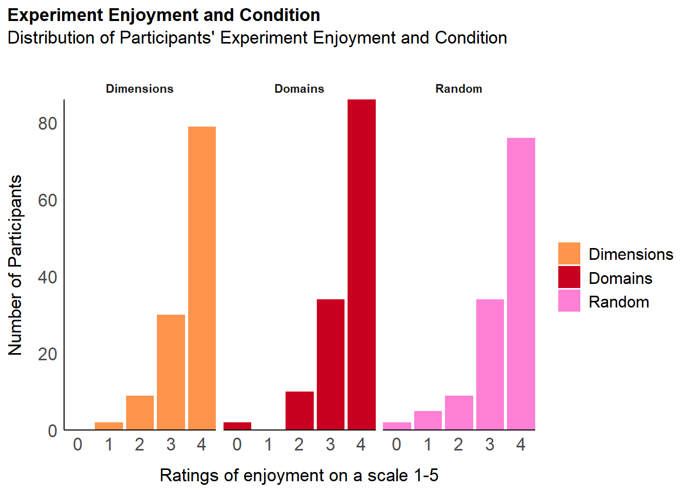

Code
library(tidyverse)
library(easystats)
library(patchwork)
library(ggside)library(tidyverse)
library(easystats)
library(patchwork)
library(ggside)# Load the data
# df <- read_csv("C:/Users/maisi/OneDrive/Placement/InteroceptionScale/study1/data/rawdata_participants.csv")
df <- read_csv("C:/Users/emmal/OneDrive - University of Sussex/GitHub/Placement/InteroceptionScale/study1/data/rawdata_participants.csv")df <- df |>
dplyr::mutate(
A1 = dplyr::case_when(
Sexual_State_A == 6 | Sexual_State_A == 5 ~ "Pass",
TRUE ~ "Fail"
),
A2 = dplyr::case_when(
Anxious_SkinThermo_A == 0 ~ "Pass",
TRUE ~ "Fail"
),
A3 = dplyr::case_when(
Nociception_ColonBladder_A == 0 ~ "Pass",
TRUE ~ "Fail"
),
A4 = dplyr::case_when(
Sensitivity_Cardiac_A == 6 | Sensitivity_Cardiac_A == 5 ~ "Pass",
TRUE ~ "Fail"
),
A5 = dplyr::case_when(
Sensitivity_Gastric_A == 6 | Sensitivity_Gastric_A == 5 ~ "Pass",
TRUE ~ "Fail"
),
A6 = dplyr::case_when(
Accuracy_Respiratory_A == 0 | Accuracy_Respiratory_A == 1 ~ "Pass",
TRUE ~ "Fail"
),
A7 = dplyr::case_when(
Accuracy_Genital_A == 0 ~ "Pass",
TRUE ~ "Fail"
),
A8 = dplyr::case_when(
Confusion_ColonBladder_A == 6 ~ "Pass",
TRUE ~ "Fail"
),
)
df$count.Fail <- apply(df[, c("A1", "A2", "A3", "A4", "A5", "A6", "A7", "A8")], 1, function(x) length(which(x == "Fail")))
p_fail <- df |>
ggplot(aes(x = count.Fail)) +
geom_bar(aes(fill = count.Fail)) +
scale_y_continuous(expand = c(0, 0), breaks= scales::pretty_breaks()) +
# scale_fill_viridis_d(guide = "none") +
labs(title = "Failed Attention Checks", y = "Number of Participants", subtitle = "Number of failed attention checks per participant") +
theme_modern(axis.title.space = 15) +
scale_fill_manual(values = c("0"="#0571B0","1"= "#d01c8b", "2"="#cc66cc", "3"="#E66101", "4" = "#ca0020", "5"="#5E3C99", "6"="#92C5DE")) +
theme(
plot.title = element_text(size = rel(1.2), face = "bold", hjust = 0),
plot.subtitle = element_text(size = rel(1.2), vjust = 7),
axis.text.y = element_text(size = rel(1.1)),
axis.text.x = element_text(size = rel(0.5)),
axis.title.x = element_blank()
)
p_faildf <- df |> filter(count.Fail == 0)p_feed <- estimate_density(df$Experiment_Enjoyment) |>
normalize(select = y) |>
mutate(y = y * 86) |> # To match the binwidth
ggplot(aes(x = x)) +
geom_bar(data=df, aes(x = Experiment_Enjoyment, fill = Condition), bins=28) +
scale_fill_manual(values = c("Dimensions"= "#E66101","Domains" = "#ca0020", "Random"="#d01c8b")) +
scale_x_continuous(expand = c(0, 0)) +
scale_y_continuous(expand = c(0, 0)) +
labs(title = "Experiment Enjoyment and Condition", y = "Number of Participants", fill = " ", x = "Ratings of enjoyment on a scale 1-5", subtitle = "Distribution of Participants' Experiment Enjoyment and Condition") +
facet_wrap(~Condition) +
theme_modern(axis.title.space = 10) +
theme(
plot.title = element_text(size = rel(1.2), face = "bold", hjust = 0),
plot.subtitle = element_text(size = rel(1.2), vjust = 7),
axis.text.y = element_text(size = rel(1.1)),
axis.text.x = element_text(size = rel(1.1)),
)
p_feed
p_age <- estimate_density(df$Age) |>
normalize(select = y) |>
mutate(y = y * 86) |> # To match the binwidth
ggplot(aes(x = x)) +
geom_histogram(data=df, aes(x = Age, fill=Gender), bins=28) +
geom_vline(xintercept = mean(df$Age), color = "#ca0020", linewidth=1.5) +
scale_fill_manual(values = c("Male"= "#64B", "Female"= "#8EB69B", "Other"="orange")) +
scale_x_continuous(expand = c(0, 0)) +
scale_y_continuous(expand = c(0, 0)) +
labs(title = "Age and Gender", y = "Number of Participants", color = NULL, subtitle = "Distribution of participants' age and gender") +
theme_modern(axis.title.space = 10) +
theme(
plot.title = element_text(size = rel(1.2), face = "bold", hjust = 0),
plot.subtitle = element_text(size = rel(1.2), vjust = 7),
axis.text.y = element_text(size = rel(1.1)),)# Did not add education disciplines
p_edu <- df |>
mutate(Education = fct_relevel(Education, "Secondary (technical) School", "Elementary School", "High School", "Bachelor", "Master", "Doctorate")) |>
ggplot(aes(x = Education)) +
geom_bar(aes(fill = Education)) +
scale_y_continuous(expand = c(0, 0), breaks= scales::pretty_breaks()) +
scale_fill_viridis_d(guide = "none") +
labs(title = "Education", y = "Number of Participants", subtitle = "Participants per achieved education level") +
theme_modern(axis.title.space = 15) +
# scale_fill_manual(values = c("Secondary (technical) school"="#0571B0","High school"= "#d01c8b", "Bachelor"="#FDB863", "Master"="#E66101", "Doctorate" = "#ca0020")) +
theme(
plot.title = element_text(size = rel(1.2), face = "bold", hjust = 0),
plot.subtitle = element_text(size = rel(1.2), vjust = 7),
axis.text.y = element_text(size = rel(1.1)),
axis.text.x = element_text(size = rel(0.5), angle = 45, hjust =1),
axis.title.x = element_blank()
)Warning: There was 1 warning in `mutate()`.
ℹ In argument: `Education = fct_relevel(...)`.
Caused by warning:
! 3 unknown levels in `f`: Secondary (technical) School, Elementary School, and
High Schoolp_edu
# Student
table(df$Student)
FALSE TRUE
298 63 p_eth <- df |>
mutate(Ethnicity = fct_relevel(Ethnicity,"East Asian", "Mixed", "White", "Black", "persian", "South Asian", "Hispanic/Latino")) |>
ggplot(aes(x = Ethnicity)) +
geom_bar(aes(fill = Ethnicity)) +
scale_y_continuous(expand = c(0, 0), breaks= scales::pretty_breaks()) +
scale_fill_viridis_d(guide = "none") +
labs(title = "Ethnicity", y = "Number of Participants", subtitle = "Participants per Ethnicity") +
theme_modern(axis.title.space = 15) +
scale_fill_manual(values = c("East Asian"="#0571B0","Mixed"= "#d01c8b", "White"="#cc66cc", "Black"="#E66101", "persian" = "#ca0020", "South Asian"="#5E3C99", "Hispanic/Latino"="#92C5DE")) +
theme(
plot.title = element_text(size = rel(1.2), face = "bold", hjust = 0),
plot.subtitle = element_text(size = rel(1.2), vjust = 7),
axis.text.y = element_text(size = rel(1.1)),
axis.text.x = element_text(size = rel(0.6), angle = 45, hjust = 1),
axis.title.x = element_blank())Scale for fill is already present.
Adding another scale for fill, which will replace the existing scale.p_eth
p_cou <- df |>
mutate(Country = fct_relevel(Country,"United Kingdom", "Ireland", "USA", "Australia")) |>
ggplot(aes(x = Country)) +
geom_bar(aes(fill = Country)) +
scale_y_continuous(expand = c(0, 0), breaks= scales::pretty_breaks()) +
scale_fill_viridis_d(guide = "none") +
labs(title = "Country of Residence", y = "Number of Participants", subtitle = "Participants per Country they are currently living") +
theme_modern(axis.title.space = 15) +
scale_fill_manual(values = c("United Kingdom"="#ca0020","Ireland"= "#d01c8b", "United States"="#FDB863", "Australia"="#E66101"))+
theme(
plot.title = element_text(size = rel(1.2), face = "bold", hjust = 0),
plot.subtitle = element_text(size = rel(1.2), vjust = 7),
axis.text.y = element_text(size = rel(1.1)),
axis.text.x = element_text(size = rel(0.7)),
axis.title.x = element_blank())Warning: There was 1 warning in `mutate()`.
ℹ In argument: `Country = fct_relevel(Country, "United Kingdom", "Ireland",
"USA", "Australia")`.
Caused by warning:
! 1 unknown level in `f`: USAScale for fill is already present.
Adding another scale for fill, which will replace the existing scale.p_coup_map <- df |>
mutate(Country = case_when(
Country=="United States"~ "USA",
Country=="United Kingdom" ~ "UK",
TRUE ~ Country
))|>
dplyr::select(region = Country) |>
group_by(region) |>
summarize(n = n()) |>
right_join(map_data("world"), by = "region") |>
# mutate(n = replace_na(n, 0)) |>
ggplot(aes(long, lat, group = group)) +
geom_polygon(aes(fill = n)) +
scale_fill_gradientn(colors = c("#E66101", "#ca0020", "#cc66cc")) +
labs(fill = "N") +
theme_void() +
labs(title = "Country of Residence", subtitle = "Number of participants by country") +
theme(
plot.title = element_text(size = rel(1.2), face = "bold", hjust = 0),
plot.subtitle = element_text(size = rel(1.2))
)
p_map
# Create mapping from df's country names to world_map's country names. I think the map is not working because the names do not match.
country_mapping <- data.frame(
df_name = c("United States", "United Kingdom"),
world_map = c("USA", "UK")
)
country_mapping df_name world_map
1 United States USA
2 United Kingdom UKp_map /
(p_age + p_edu)write.csv(df, "../data/data_participants.csv", row.names = FALSE)